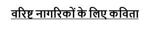

Dear Readers, welcome to the June 2026 edition of MY DVC – MY VOICE. As we step into the vibrant monsoon season, this month's edition captures our collective strides toward technological modernization, legislative readiness, community welfare, and sustainable growth across the Damodar Valley Corporation.
Our featured HR Insight takes a deep dive into the dual realities of the modern workplace: Artificial Intelligence in Human Resources. As digital transformation reshapes the corporate landscape, the future lies in the powerful intersection of artificial intelligence and human intelligence — using AI to drive analytical precision and speed while anchoring our core practices in empathy, ethics, and human-centric leadership. Alongside technological adoption, keeping pace with changing statutory frameworks remains vital. This issue highlights the crucial development regarding the delegation of authority under the Industrial Relations Code, 2020, designed to streamline trade union recognition and strengthen collective bargaining.
Operational excellence is driven by a committed, safe, and collaborative workforce. We are proud to share the launch of "संवाद से समाधान अभियान" at MTPS. Conceived as a flagship campaign, this structured dialogue forum bridges management, contractors, and outsourced workers to address compliance, welfare, and safety through collective problem-solving. Speaking of safety, our nationwide commitment to operational harmony was prominently displayed during the Electrical Safety Week Campaign, bringing crucial awareness, emergency planning updates, and safety pledges to every plant site.
Beyond our operations, DVC continues to foster a culture of holistic health and environmental consciousness. This month, our stations celebrated the 12th International Day of Yoga under the theme "Yoga for Healthy Ageing," emphasizing sustainable physical and mental well-being. Furthermore, aligning with the global campaign #NowForClimate, World Environment Day was marked by impactful green rallies, extensive tree plantation drives, and an inspiring "Waste to Worth" campaign at DSTPS that transformed industrial scrap into eco-friendly plant transportation.
From critical CSR milestones — like the launch of the Trinetra Archery Academy at DVC Tubed to support rural youth, local health drives, and collaborative blood donation camps — to creative expressions in our Employee Corner, this issue reflects the vibrant pulse of DVC.
We extend our deep gratitude to the contributors who made this edition possible and invite all employees to keep sharing their achievements, ideas, and creative entries. Don't forget to put your knowledge to the test in this month's Current Affairs Quiz!
Happy Reading!
✍️ The Editorial Team MY DVC – MY VOICE
HR Insight
Artificial Intelligence in Human Resources
Transforming the Future of Work
The Human Resources (HR) function is undergoing a significant transformation with the adoption of Artificial Intelligence (AI). Once focused primarily on administrative processes, HR is now evolving into a strategic business partner by leveraging AI to improve efficiency, enhance employee experience, and enable data-driven decision-making. Rather than replacing human judgment, AI empowers HR professionals by automating routine tasks and allowing them to focus on people-centric initiatives.
AI Across the Employee Lifecycle
🎯
Talent Acquisition
AI-powered platforms screen resumes, match candidate profiles with job requirements, schedule interviews, and answer applicant queries through chatbots — reducing hiring time while recruiters focus on skills, cultural fit, and potential.
📚
Learning & Development
Modern AI systems recommend personalized learning paths based on role, competencies, and career aspirations. Adaptive platforms help employees acquire new skills at their own pace.
📈
Performance Management
AI enables managers to analyze performance trends, identify skill gaps, and provide timely feedback. Data-driven insights support fairer evaluations and informed talent decisions.
💬
Employee Engagement
AI-powered sentiment analysis and virtual HR assistants help organizations understand employee concerns, respond to routine queries, and improve workplace communication.
🗺️
Workforce Planning
By analyzing historical and real-time data, AI assists HR leaders in forecasting manpower requirements, identifying future skill needs, and planning succession effectively.
Opportunities for DVC
For Damodar Valley Corporation, AI presents opportunities to modernize HR processes while strengthening organizational effectiveness. Potential applications include:
AI-enabled recruitment and onboarding support
Digital HR assistants for employee services and policy guidance
Predictive analytics for training and competency development
Data-driven workforce planning and succession management
AI-assisted analysis of employee feedback and engagement trends
Enhanced safety learning through personalized digital training modules
These applications can improve service delivery while enabling HR teams to devote more time to employee development, organizational culture, and strategic initiatives.
Responsible and Ethical Use of AI
The successful adoption of AI requires responsible implementation. HR professionals must ensure that AI systems are transparent, unbiased, secure, and compliant with organizational policies and legal requirements. Human oversight remains essential, particularly in decisions involving recruitment, promotions, performance evaluation, and employee welfare. AI should complement — not replace — the empathy, ethical judgment, and interpersonal skills that define effective human resource management.
Preparing for the Future
As workplaces become increasingly digital, HR professionals must develop AI literacy alongside their expertise in people management. The future of HR lies in the collaboration between artificial intelligence and human intelligence. While AI brings speed, accuracy, and analytical capabilities, people bring creativity, empathy, ethics, and leadership. Together, they can create smarter workplaces, better employee experiences, and more resilient organizations. As DVC continues its journey of digital transformation, embracing AI responsibly can help build an agile, efficient, and employee-centric HR ecosystem — one that is well-equipped to meet the challenges and opportunities of the future.
"The future of HR is not AI replacing people — it is people empowered by AI to make smarter, faster, and more human-centric decisions."
AI Certification: Preparing Professionals for the Future
— Binay Tudu, Manager (HR)
AI skills have become essential in today's workplace as organizations increasingly rely on Artificial Intelligence for automation, data-driven decision-making, and operational efficiency. Demand for AI-certified professionals is rapidly growing because certified individuals possess the practical knowledge required to implement and manage AI technologies effectively.
DVC is progressing towards digital transformation through technology-driven initiatives such as SAP, and AI certification programs for executives through short-term Learning & Development (L&D) courses can support this transformation.
AI certifications benefit both organizations and employees by helping bridge skill gaps, improving productivity, enhancing employee mobility, and supporting career growth. Professional AI credentials provide a competitive advantage by validating an individual's ability to design, implement, and manage AI solutions while demonstrating practical expertise that employers increasingly value.
Investing in AI certification prepares employees for future challenges, enabling them to contribute more effectively to organizational innovation and technological advancement.
Figure 1: AI Certification
Recognition of Trade Unions under the Industrial Relations Code, 2020
— Ajay Kumar Singh, Manager (HR)
The Ministry of Labour & Employment has issued a notification (Gazette of India, 11 June 2026) delegating the authority to appoint Verification Officers for the recognition of Negotiating Unions and Negotiating Councils under the Industrial Relations Code, 2020. This step is expected to streamline the recognition of representative trade unions in establishments where the Central Government is the appropriate authority.
Why is this Important?
Section 14 of the Industrial Relations Code, 2020 provides for the recognition of a Negotiating Union or Negotiating Council to facilitate effective collective bargaining between employers and workers. Verification Officers are responsible for verifying union membership and ensuring compliance with the prescribed criteria for recognition.
🔑 Key Highlights
Power to appoint Verification Officers delegated to Joint Secretaries and officers handling Industrial Relations in the Ministry of Labour & Employment
Delegation made under Section 100 of the IR Code, 2020, read with Rule 9(3) of the Industrial Relations (Central) Rules
🧾 Role of Verification Officers
Verify trade union membership claims
Examine relevant records and documents
Conduct membership verification
Determine representative status for recognition
Facilitate recognition of Negotiating Unions or Councils
📊 Expected Impact
Improved administrative efficiency with fewer procedural delays
Expedited union recognition and timely constitution of negotiating bodies
Stronger collective bargaining and effective industrial relations
The notification applies to establishments where the Central Government is the appropriate government, including eligible Central Public Sector Undertakings and other notified establishments.
Conclusion
The delegation of appointment powers marks an important step towards the effective implementation of the Industrial Relations Code, 2020. By simplifying the recognition process for Negotiating Unions and Negotiating Councils, the Government aims to promote faster decision-making, stronger collective bargaining, and improved industrial relations.
Source: Ministry of Labour & Employment, Government of India.
HR Initiative
"संवाद से समाधान अभियान" — Dialogue with Outsourced Workers at MTPS
A flagship program to address the issues and concerns of outsourced workers through constructive dialogue and collaborative problem-solving.
MTPS is the largest power station of DVC and engages approximately 3,500 outsourced workers through various contractors and agencies. These workers frequently encounter issues relating to timely disbursement of wages, payment of prescribed wage rates, availability of statutory social security benefits, and other welfare-related matters. Given the large outsourced workforce and the diversity of issues involved, there was previously no structured platform where outsourced workers, contractors/agencies, and the management could regularly interact, discuss concerns, and work collaboratively towards constructive solutions.
The campaign is expected to promote constructive engagement, improve compliance with statutory provisions, and contribute towards a more productive and amicable work environment. Through regular dialogue and coordinated efforts among all stakeholders, it seeks to facilitate timely resolution of issues, enhance workers' satisfaction, strengthen trust, and foster harmonious industrial relations.
Key Features of the Campaign
A structured dialogue session every Saturday (except the second Saturday of the month) with outsourced workers and their representatives/unions, ordinarily from 11:00 A.M. to 12:00 Noon
Contractors/agencies invited to participate to facilitate effective discussion and resolution of issues
A department-wise schedule for interaction prepared and circulated in advance
Awareness programmes on payment of wages, prescribed wage rates, EPF & ESI contributions, checking EPF balances, filing withdrawal claims, ESI benefits, and other statutory welfare provisions
Awareness on technology-enabled labour welfare initiatives and compliance-related digital platforms
Orientation sessions on the Contract Labour Information Management System (CLIMS) Module for workers and contractors
Safety awareness programmes on safety rules, safe work practices, hazard identification, and precautionary measures — in coordination with the Safety Department
Knowledge dissemination on the provisions of the new Labour Codes and other relevant labour laws
A platform to discuss and resolve issues relating to working conditions, welfare measures, statutory compliance, and grievance redressal
Documented proceedings of each session, with monitored follow-up action to ensure timely resolution
The initiative seeks to create an inclusive environment where concerns can be openly discussed and addressed through collective efforts. It is an endeavour to reinforce the sense of participation, involvement, and belongingness among outsourced workers — and to make them feel that their contribution is of paramount importance to the growth, productivity, and success of MTPS.
— Binay Tudu, Manager (HR), MTPS
Employee Corner
Creative Expressions from Our People

श्री पवन कुमार (568422)वरिष्ठ प्रबंधक (एम), सुरक्षा विभाग चंद्रपुरा ताप विद्युत स्टेशन (CTPS), दामोदर वैली कॉर्पोरेशन
अशोक कुमार कपूरसहायक ग्रेड-I (हिंदी) · कर्मचारी संख्या 546267 डीवीसी, डीएसटीपीएस, अंडाल
Events & Celebrations
Life Across DVC This Month
🧘 Celebration of International Yoga Day 2026
21 June 2026
Theme: "Yoga for Healthy Ageing"
Damodar Valley Corporation enthusiastically celebrated the 12th International Day of Yoga on 21 June 2026 across its establishments. The celebrations reflected the Corporation's continued commitment to promoting employee health, well-being, and a balanced lifestyle through the practice of yoga.
Across all DVC locations, the celebrations reinforced the importance of incorporating yoga into everyday life to improve physical health, reduce stress, strengthen mental resilience, and promote holistic well-being. The programmes concluded with a collective pledge by participants to make yoga a regular practice and to foster a culture of health, wellness, and balanced living throughout the Corporation.
🌍 World Environment Day 2026 at DSTPS
5 June 2026
Theme: "Inspired by Nature for Climate" · #NowForClimate
Durgapur Steel Thermal Power Station (DSTPS) celebrated World Environment Day with a series of initiatives promoting environmental sustainability, reflecting the station's commitment to a greener future.
The celebrations began with a Green March led by Shri Anil Kumar Jain, CGM & Head of Project, joined by senior officials, employees, CISF personnel, contractual workers, and women employees — spreading awareness through slogans advocating environmental conservation. A Tree Plantation Drive followed, during which nearly 100 fruit-bearing saplings were planted to enhance the station's green cover and biodiversity. Shri Jain encouraged everyone to adopt eco-friendly practices such as conserving energy and water, reducing plastic use, and supporting plantation drives.
A Cycle Rally at Benachity Colony further promoted pollution-free transportation and cycling as a healthy, sustainable mode of travel. The programme concluded with a collective pledge to protect the environment, reaffirming DSTPS's commitment to sustainable development and responsible power generation.
⚡ Electrical Safety Week Campaign 2026
26 June 2026
National Electrical Safety Day · Theme: "Today's Awareness, Tomorrow's Prevention"
DVC remains committed to fostering a vibrant safety culture and ensuring a safe and healthy working environment for all. The programme across DVC included Electrical Safety Badge Pinning, a Safety & Health Pledge, release of the revised On-Site Disaster Management Plan, distribution of electrical safety awareness materials and Electric Shock Treatment Charts, and the opening of Safety Suggestion Boxes.
♻️ Swachhta Day Highlights — 'Waste to Worth' Cycling Initiative
19 June 2026
Swachhata Pakhwada 2026 · DSTPS, Andal
As part of Swachhata Pakhwada 2026, DVC's Durgapur Steel Thermal Power Station launched an innovative "Waste to Worth" initiative by refurbishing 12 discarded bicycles into fully functional cycles for short-distance movement within the plant premises.
The initiative promotes eco-friendly transportation by reducing the use of motor vehicles, conserving fuel, lowering carbon emissions, and encouraging a healthier lifestyle among employees. Launched under the leadership of Shri Anil Kumar Jain, CGM & HOP, the programme was marked by a symbolic cycle ride by senior officials, reinforcing the message of green mobility and employee wellness.
By transforming scrap into valuable assets, the initiative reflects DSTPS's commitment to Swachhata, sustainability, resource conservation, the circular economy, and employee well-being — demonstrating how innovative practices can contribute to a greener and healthier workplace.
DVC's Koderma Thermal Power Station (KTPS) Hospital conducted a mop-up round of the Pulse Polio Immunization Campaign on 1 July 2026 in collaboration with the Primary Health Centre (PHC), Chandwara, Koderma. Children below five years of age who had missed their dose were administered the life-saving oral polio vaccine under the nationwide slogan "दो बूंद ज़िन्दगी की" — supporting the Government of India's mission to sustain a polio-free nation.
60 children immunized1 July 2026
🍚 Nutrition as a Weapon Against Tuberculosis — DVC Konar
Under its CSR initiative and the Government of India's Nikshay Poshan Yojana, DVC Konar distributed nutrition kits to tuberculosis patients at the Vishnugarh Community Health Centre in Hazaribagh, following the Deputy Commissioner's directions to provide nutritional support alongside medical treatment. Each kit contained gram, lentils, jaggery, mustard oil, soybean oil, and soya chunks to improve patients' immunity and recovery.
60 TB patients supported
🏹 Trinetra Archery Academy — Empowering Rural & Tribal Youth
DVC Tubed inaugurated the Trinetra Archery Academy at DVC Tubed Coal Mines, Latehar, in collaboration with the Dola & Rahul Banerjee Sports Foundation. The academy was inaugurated by Shri S.K. Panda, Member (Technical), DVC, in the presence of senior officials and Arjuna Awardees Smt. Dola Banerjee and Shri Rahul Banerjee. It will provide professional archery training — building technical skills, fitness, mental resilience, and sportsmanship. Cultural performances and an archery demonstration marked the occasion.
Latehar, JharkhandArjuna Awardee mentors
🏫 Sustainable Community Development Through Reuse
At RTPS, refurbished steel furniture made from surplus office assets was distributed to Naragoria D.D. High School, Dumurhir High School, and nearby primary schools under the Education Development Programme. At MTPS, 50 serviceable ceiling fans were distributed to Gangajalghati High School and Nityanandpur High School, and carrom boards were provided to the youth of Lotiaboni Navin Sangh to promote indoor sports and constructive recreation.
5+ schools supported50 ceiling fans
🩸 Blood Donation Drives Save Lives, Strengthen Community Healthcare
DVC organized blood donation camps across its projects. On World Blood Donor Day, MTPS collected 46 units of blood with participation from employees, CISF personnel, and local residents. Ahead of DVC Foundation Day, RTPS collected 40 units, while Konar Dispensary — in collaboration with Arogyam Hospital, Hazaribag — collected another 40 units. These initiatives reflect DVC's commitment to strengthening healthcare services and fostering a spirit of service and community welfare.
MTPS · 46 unitsRTPS · 40 unitsKonar · 40 units
Health Corner
Monsoon: Stay Safe & Healthy
A Season of Care
With the monsoon at its peak, this month's Health Corner is a timely reminder to guard against seasonal illnesses. The poster highlights simple, practical precautions for the rainy season:
Vector-borne diseases — prevent dengue, malaria, and chikungunya by avoiding stagnant water and using protection
Water-borne illnesses — drink safe water and eat freshly cooked food
Flu & fever — keep immunity up and seek timely medical advice
Digestive issues — practice food hygiene and stay hydrated
Skin problems — keep skin dry and maintain personal hygiene
General hygiene — handwashing and clean surroundings go a long way
Click the poster to view the full prevention guide.
⚡ Power Up Your Knowledge
Current Affairs Quiz
Rely on your own knowledge — no Google search or AI tools while answering. Let's keep the challenge fun and fair!
🏆 Winners of the Last Business Quiz
Shampa RoyExecutive (Civil) Barrage & Irrigation
🎉
Vivek SinghManager (HR) Panchet
🎉
Shubham MishraAssistant Manager (IT) Kolkata
🎉
✍️ Submit Online
Share Your Story with MY DVC – MY VOICE
Articles, achievements, poems, photographs or news from your station — in English or Hindi. Selected entries are featured in the newsletter.
🔐
Log in to submit. Your name, designation, department and place of posting are attached to your entry automatically. Your draft is kept on this device.
✍️ Be a Part of MY DVC – MY VOICE
We hope you enjoy going through this edition as much as we enjoyed creating it for you! Our team is committed to bringing you meaningful and engaging content, and we truly value your thoughts, ideas, and creativity — so keep them coming!
All DVC employees are invited to contribute to the HR Newsletter. Share your experiences, achievements, ideas, photographs, or news from your station in English or Hindi.
Articles: up to 250 words in Word format
Selected entries are featured along with the contributor's photograph
Please mention your name, designation, department, and place of posting
Entries are shortlisted by the Editorial Team
💬 Have suggestions to make the newsletter better? We'd love to hear from you!
Send your contributions and feedback by the 22nd of every month — online or by email: